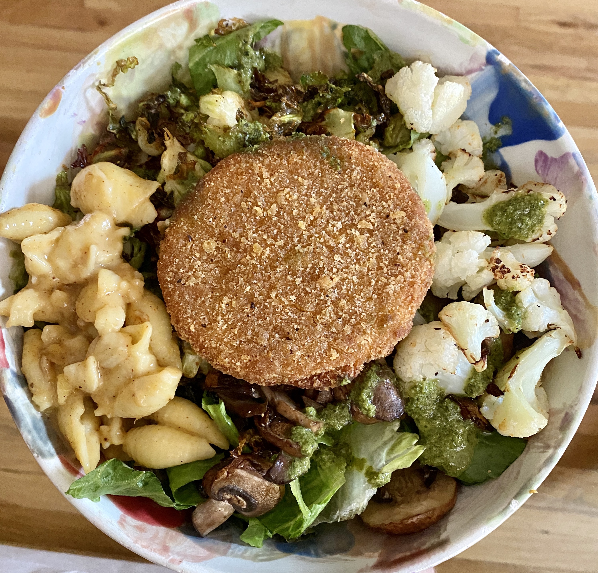
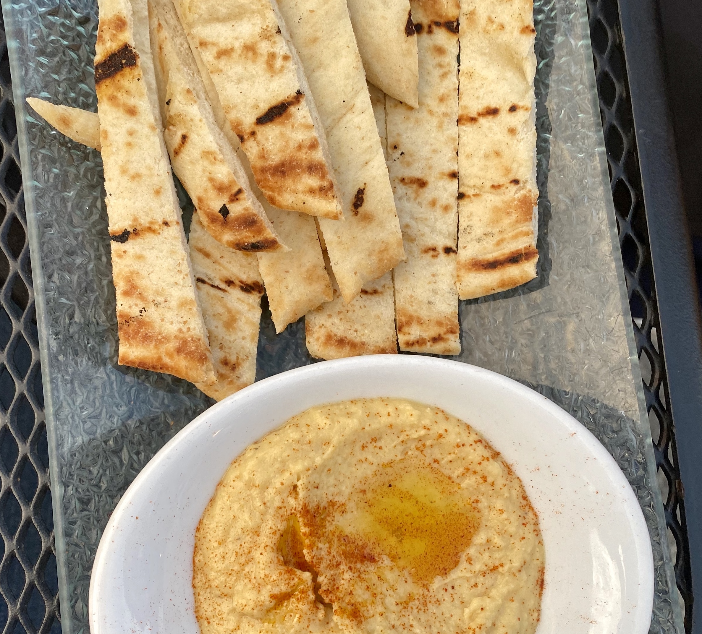
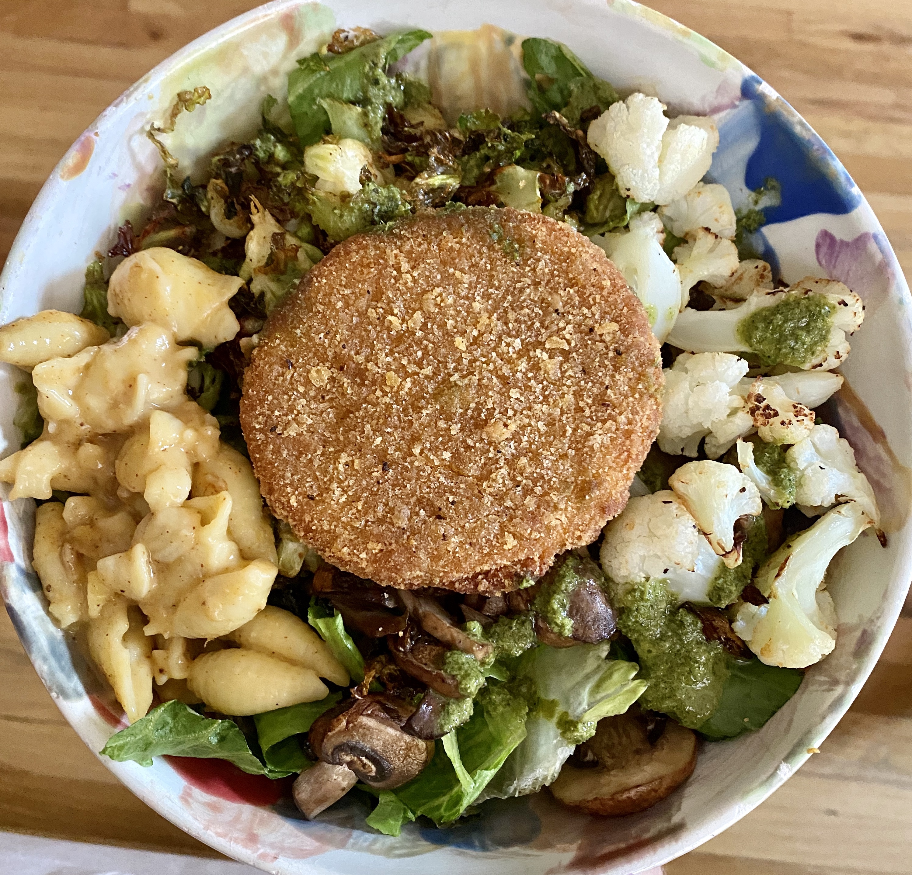
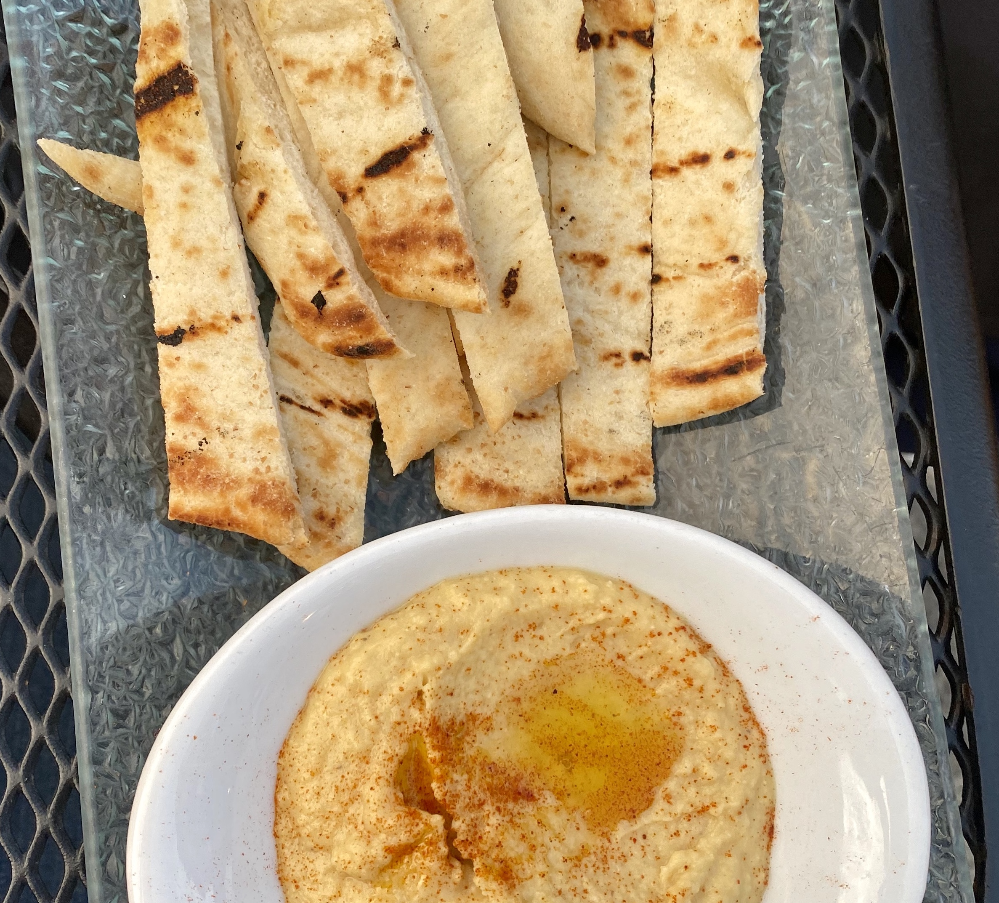

ABOUT BITESBYTM
Hi! My name is Tara Moore! I'm a junior at the University of Michigan. I am studying Information Analysis within the School of Information and minoring in Business Administration through the Ross School of Business. Since going vegan four and a half years ago, I have fallen in love with cooking and food! I've created this blog to share how I focus on healthy eating while in college!


 


